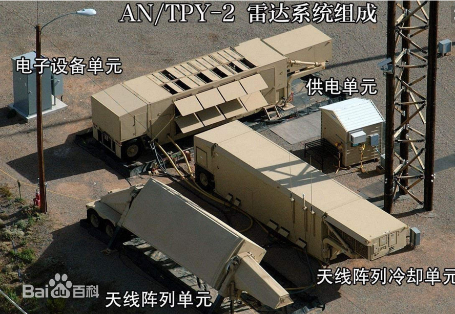

萨德（战区高空区域防御系统）一般指末段高空区域防御系统 
末段高空区域防御系统（英语：Terminal High Altitude Area Defense，缩写：THAAD，萨德）是美国导弹防御局和美国陆军隶下的陆基战区反导系统，一般简称为萨德反导系统。
末段高空区域防御系统的前身是历经多次失败而告终的战区高空区域防御系统，美国陆军于2004年对该系统进行重新设计，并重新命名为现名，类似于海军的宙斯盾作战系统，由指管通情指挥系统，拦截系统，发射系统和雷达及其支援设备组成。2007年10月，末段高空区域防御系统在美国太平洋导弹靶场成功完成大气层外的拦截试验。
末段高空区域防御系统作为专门用于对付大规模弹道导弹袭击的防御系统，其独特优势是在防御大规模导弹威胁的同时， 为作战部队提供更加灵活的使用选择。其目的不是取代而是补充MIM-104防空导弹以及海军宙斯盾弹道导弹防御系统、 陆基中段防御系统和美国在世界各地部署的预警雷达与传感器，从而使美军具备多层弹道导弹防御能力。2016年7月8日美国和韩国正式宣布将在韩国部署萨德反导系统，引发韩国国内巨大争议以及本地区国家强烈不满。
| 中文名 | 末段高空区域防御系统 | 单位造价 | 7.5亿美元（2009年币值） |
| 外文名 | Terminal High Altitude Area Defense | 服 役 | 2008年5月 |
| 承包商 | 洛克希德·马丁、波音、雷声等 | 数 量 | 已部署24套（2013年） |
| 事件相关 | 韩国部署萨德反导系统 |
当地时间3月7日上午,韩国国防部发布消息,萨德系统的部分装备,前一日(3月6日)已经通过军用运输机运抵驻韩美军乌山空军基地。韩国防部表示将尽快经过相应程序陆续将萨德系统部署在星州基地。
针对此事，外交部发言人回应将坚决采取必要措施维护自身安全利益,由此产生的一切后果由美韩承担.
海湾战争后，由于美国在战争中使用的MIM-104防空导弹属于低层防空导弹，最大射高只有约20公里，主要用于保护小型重要目标，防御面积较小，拦截也不是在足够高的空间进行，而且拦截造成的导弹碎片经常落在己方或友方领土上，同样会对地面人员和资产造成破坏。如果敌方使用大规模杀伤性武器，如核弹头和化学弹头，像这样的低层拦截是没有什么效果的。因此，开发一种能在更远距离、更大高度上拦截来袭弹道导弹的高科技术就变得十分必要。1987年，美国陆军空间与战略防御司令部提出了战区弹道导弹防御的高空防御技术开发计划。
1989年美国防部正式公开此项计划，1990年当时的战略防御计划局（即现在的弹道导弹防御局）将合同进行公开招标，1992年9月洛克希德·马丁公司赢得了演示/验证合同，合同的目标是对大气层内/外战区弹道导弹防御系统所需全部技术进行集成。1993年10月美国国防部将这一开发计划正式称之为战区高空区域防御系统（英语：Theater High Altitude Area Defense），该系统在1999年8月前共进行了11次飞行试验， 其中前3次为非拦截试验，2次成功、1次失败；后8次为拦截试验， 6次失败、 2次成功。 1999年8月2日进行最后一次拦截试验，也以失败告终，遭受重大挫折的战区高空区域防御系统在此后五年多时间里再没有进行拦截试验。
美国陆军于2004年对该 系统进行重新设计，并重新命名为 “末段高空区域防御系统” （由于“战区”和“末段” 的英文单词都是以 “T” 开头， 所以缩写仍为THAAD） 。从此，萨德系统进入了一个新的发展阶段。调整后的 THAAD 系统于2005年11月恢复飞行试验，部署前共计划进行14次试验。2006年10月，萨德系统从白沙导弹靶场移至位于夏威夷考艾岛的太平洋导弹靶场。2007年1月，萨德系统首次在太平洋导弹靶场进行飞行试验。2007年4月，萨德系统进行同样的试验，再次成功。2007年6月，萨德拦截弹成功完成低空飞行试验。2007年10月，萨德系统在太平洋导弹靶场成功完成大气层外的拦截试验。
2007年1月， 末段高空区域防御系统正式进入生产与部署阶段。2008年5月28日， 首批末段高空区域防御系统正式装备美国陆军，部署在第32陆军防空反导司令部第11防空炮兵旅第4防空炮兵团阿尔法连， 包括24枚拦截弹、3辆发射车、1套火控系统和1部AN/TPY-2雷达。末段高空区域防御系统的部署以及初始作战能力和互操作能力的验证和提高，使美国军方至少在理论上具备了从弹道导弹飞行中段到末段无空隙的强大的防御体系网络。美国军方的近期目标是使末段高空区域防御系统具有拦截近程和中远程弹道导弹的能力， 远期目标为具备拦截洲际弹道导弹的能力
2016年伊始， 朝鲜的武器发展就动作频频， 先是1月6日进行了自称的 “第一次氢弹” 试验， 随后于2月7日又成功发射了 “光明星-4”人造地球卫星， 韩日美等国认为此次发射是变相的远程火箭试验。 为了应对朝鲜的威胁， 韩国总统朴槿惠表示将尽一切努力寻求一切外交途径制裁朝鲜，同时更是考虑要引进美国的末段高空区域防御系统。 随后，韩国国防部发言人表示，已启动美国在韩部署末段高空区域防御系统潜在可能性的论证， 将重点考察朝鲜的核武器和弹道导弹威胁，以及韩国的国家安全和利益， 同时也会考虑对中国的影响。
中国外交部副部长张业遂就美韩可能在韩部署末段高空区域防御系统表明严正立场， 指出此举不利于缓和当前紧张局势，不利于维护地区和平稳定， 损害中国战略安全利益， 中方对此严重关切并明确反对， 希望有关方慎重处理。2016年7月8日美国和韩国正式宣布将在韩国部署“萨德”反导系统，引发韩国国内巨大争议以及本地区国家强烈不满，中国海军航空兵部队17日在黄海和渤海海域组织12个机型，41架战机展开对海对地打击演习。这是中国首次在与黄海邻近的地方举行了大规模军事演习